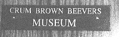
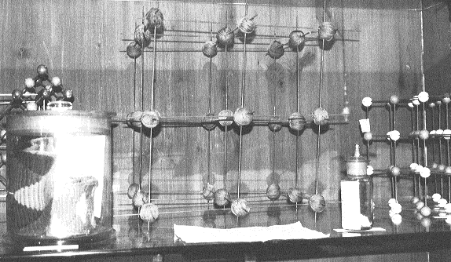

Museums worth a visit

The Crum Brown Beevers Museum
in the CHEMISTRY DEPARTMENT of the UNIVERSITY of EDINBURGH, West Mains Road,
Edinburgh, EH9 3JJ
This small Museum was begun by Alexander Crum Brown, who was Professor of
Chemistry in Edinburgh from l869 to l908. Crum Brown had very wide chemical
interests, and had publications in fields of organic chemistry, physical
chemistry, and the applications of mathematics to chemistry. He also had a
deep interest in crystallography, and the Museum contains many relics of
this.

The most surprising exhibit is a model of the structure of Rock Salt made from knitting needles held together by balls of coloured wool. The structure is exactly that finally proved by the Braggs in 1914, and it shows that: Crum Brown had realised the ionic nature of the structure, whereas most chemists at the time believed in a molecular structure. Other Museum objects of crystallographic interest are a fine collection of single crystals by Goldberg of Heidelberg, a collection of cardboard models of crystal forms by Krantz, and a fine optical goniometer by Fuess. There are also some Haüy models showing crystal forms with the faces stepped to illustrate the unit cell theory of crystal structure.
There are two exhibits which show Crum Brown's international interests. One is a reprint sent to him by Mendeléev, signed and dated 1884. Mendeléev was a house-guest of Brown on the occasion of the University of Edinburgh's 300th anniversary in 1884. The other is an etching of Paul von Groth. This is a copy of a portrait made of Groth in Munich in 1904. This portrait was originated by a British committee in 1903 to commemorate 25 years of Groth's editorship of the "Zeitschrift für Kristallographie". Evidently Crum Brown was a subscriber and was sent a copy. Our copy is in better condition than the original which I saw in Munich in March 1995.
The Museum contains a number of balances, two-pan types with lots of boxes of weights, ranging from student balances to sensitive analytical instruments. One is sufficiently sturdy to take one-litre flasks of water for calibration purposes. There is also a fragile Westphal balance for surface tension measurements. We also have many electrical items, various galvanometers (by Tinsley and Cambridge Instruments).
There is a String Galvanometer and a String Electrometer. These were for the measurement of rapidly changing currents and voltages respectively. Among many other artefacts we have some films made by I. Traube showing Brownian Movement, and a couple of splendid Beckman Thermometers. These were used, of course, for the measurement of small changes in freezing or boiling points.
Among the instruments we have a number of Microscopes, some with unusual features, and a number of Refractometers, some very accurate ones by Abbé. For many years the subject of Chemistry in Edinburgh was taught essentially by one man, the Professor, who also collected the fee for the course. We still have in the Museum the small brass device for testing the guineas given; there was a class of student who would present "light guineas"!
We have a projector for the old "quarter plate" lantern slides, and a set of slides of University buildings and notables including Lord Lister, of antiseptic fame. There is a printed copy of lecture notes from Joseph Black's course in 1766-68 and a set of student's notes from the lectures of Crum Brown (1910). we have portraits of all the Professors of Chemistry from 1755.
A great deal of computing has gone on in the Department in the past and we have a good collection of computing devices and machines, notably several sets of the Beevers-Lipson strips. These were used for many years in X-ray Crystallographic Laboratories for the calculation of Fourier maps. A complete list of the contents of the Museum can be obtained by writing to me at the Museum.
C.Arnold Beevers September 1995
Editors Note: The museum is normally open weekdays during term time, make enquires at the Chemistry Department Office.
John Robertson has sent details of two
museums his grand children found fascinating. If you visit either of them,
why not ask whether they might like to borrow the BCA blocks, (shown at the
Cardiff Spring meeting) as an exhibit for a few months?
Eureka!, the Museum for children, Discovery Road, Halifax,
West Yorkshire, HX1 2NE
Open 7 days a week, closed Christmas Day. It is
next to Halifax railway station.
The entire site is accessible to people with disabilities. Booking line
tel: (01422) 330012
24 hour recorded information line
tel: (01426) 983191 It is designed mainly for children ages 5 to 12 but
everyone can learn something from a visit to this hands-on museum.
Techniquest, Wales own Hands-on museum on Cardiff Bay
72 Bute Street, Pier Road, Cardiff, CF1 6AA tel: (01222) 460211
Closed on Mondays, except for some Bank Holidays. Designed for people
of all ages and abilities, Ideal for family outings, school trips and
special occasions.